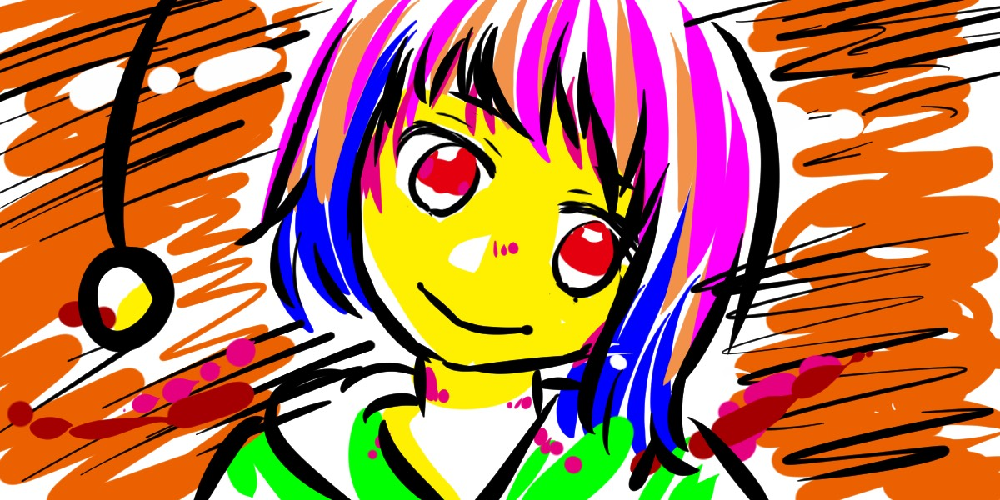

プログラミング教室ダラーエーエー（$AA）は、主に小学生〜高校生を対象とした、オンラインプログラミング教室です。
プログラミング必修化にあたって、つまづいてしまったり、怖くなってしまっているお子さん向けに、懇切丁寧に指導していきます。
方法としては、オンライン上でお互いの画面を出しながら、プログラミングを教えてていくことを想定しています。
交通費実費にて、対面授業も可能です。
特にこだわりがなければ、MITが開発している子供向けプログラミング言語「Scratch」を教材にすることを想定しています。
Scratch公式のみんなの作品集を見て、アイデアをふくらませていてくださいね。
講師は簡単なイラストが描けるので、使用するにあたって著作権の心配のないイラストをなんでも使うことができます。
アニメ関連の作品も作ることが可能です。（ネット公開は、公式サイトを確認して大丈夫だったらになります）
こだわりがありましたら、なんでも教えることはできます。その際、どう教えるか練るなどの時間をいただくことがあります。
はじまりたての教室です。2024年3月まで、モニターを募集しております。
初回の無料相談や、事前のテキストでのヒアリングで、教室に期待することをお聞かせください。
音声のみ、またはチャット相談でも大丈夫です。
お気軽に、こちらのGoogleフォームからご連絡ください。LINEは準備中です。
Googleフォーム以外を使いたいという方は、以下のフォーマットから直接メールをお送りください。
| 宛先 | sakurapancakeore[ここにアットマークを記載]gmail.com |
| ご連絡先 | メール送信元に返信します。 |
| タイトル | プログラミング教室無料相談希望 |
| 本文 | 月〜土 11:00am〜21:00まで 第1候補日時: 第2候補日時: 第3候補日時: |
また、メインではないのですが、大学生〜高齢者の方のプログラミング教室・相談も承っています。
いりきだ もえ

1986年生まれ。女性。神奈川県横浜市出身。さそり座。
フェリス女学院中高卒業後、Macromedia Flashの仕事がしたくて横浜デジタルアーツ専門学校に入学。
Flashはセンスの関係で諦め、卒業後はWebエンジニアとして株式会社ドワンゴに新卒入社。
ニコニコ動画の黎明期からの道のりを内部から眺めていました。
2022年10月にドワンゴを退職し、フリーランスのエンジニアとして活動しています。
子どもはいませんが、子どもが好きなので、当教室を開講しました。
趣味は絵を描くこと、VTuber配信鑑賞、カラオケ、乗り鉄、読書。
さらに詳しいことはこちらに書いています。